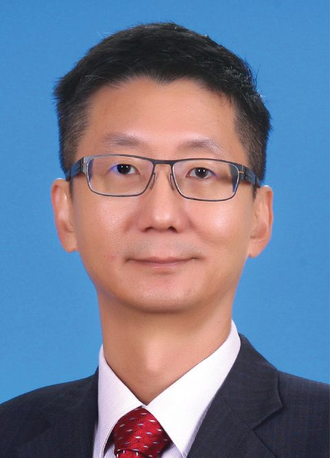
颜登逸
董事长
 南华独立中学
← 学校组织
南华独立中学
← 学校组织
董事会 · BOARD OF DIRECTORS
独中不靠政府拨款办学。九十年来，董事会一届接一届地筹钱、买地、盖楼、聘师，在最难的年头把学校留住。这一页是他们的名字。
下列名录取自校方 2022 年董事部资料，尚未取得最新一届的正式名单，姓名与职称可能已有变动；照片一律暂缺，版位已预留。本页为校对稿，敬请董事会与校方指正后更新。

董事长
署理董事长
副董事长
副董事长
总务
副总务
副总务
财政
副财政
董事
董事
董事
董事
董事
董事
董事
董事
董事
董事
自 1936 年建校起，共十四任、十三人。1942 至 1945 年因日据停办；1961 年起为南华独中董事会。
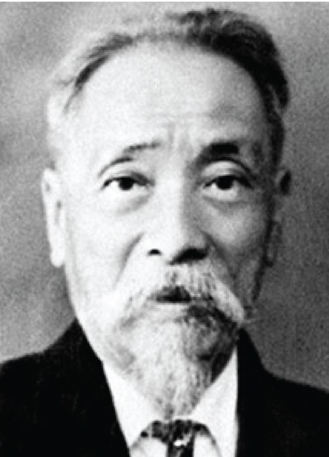
第一任 · 1936
第六任 · 1946–1947（战后复办）
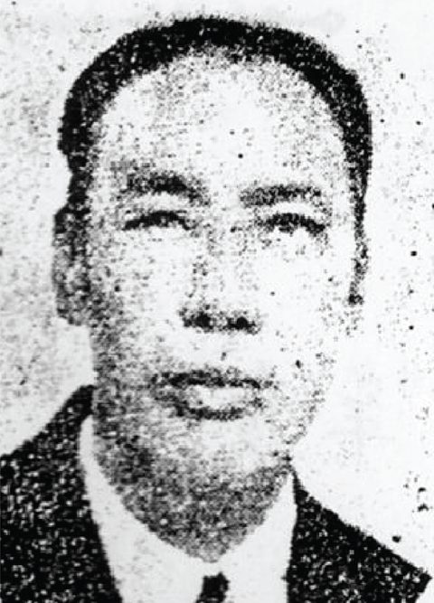
第二任 · 1937
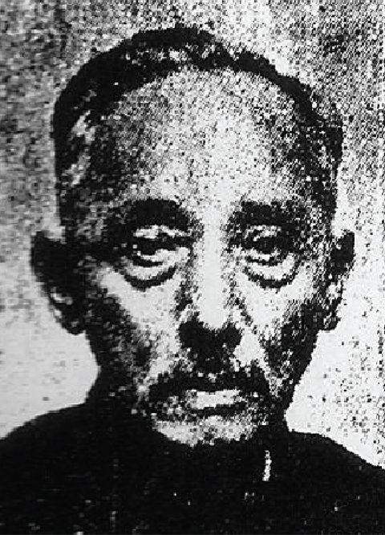
第三任 · 1938
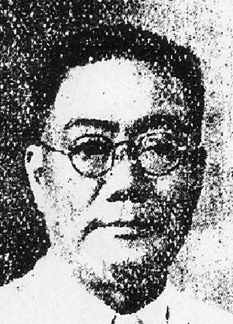
第四任 · 1939–1940
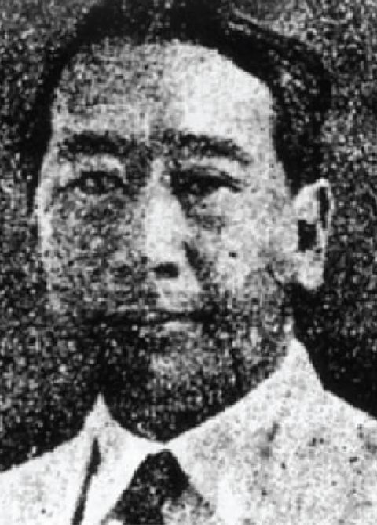
第五任 · 1941
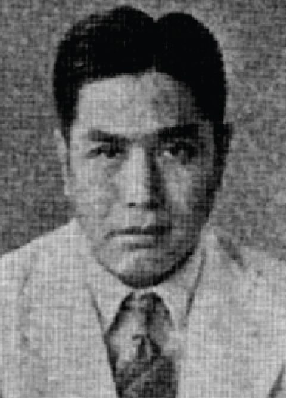
第七任 · 1948–1954
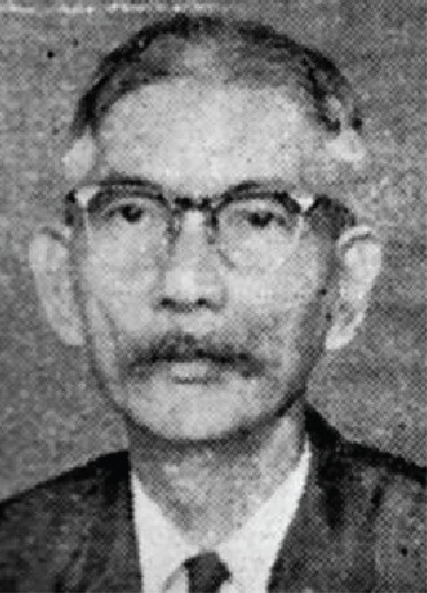
第八任 · 1955–1956
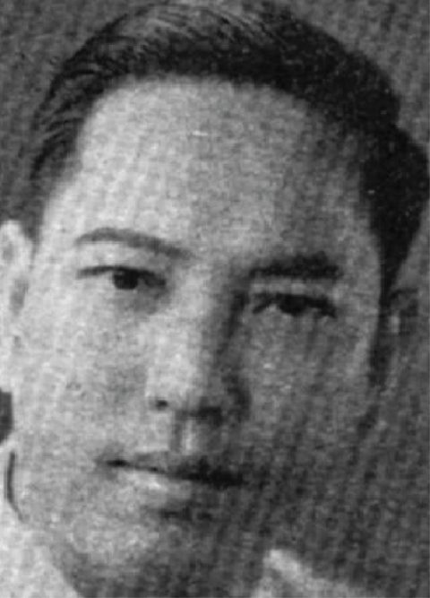
第九任 · 1957
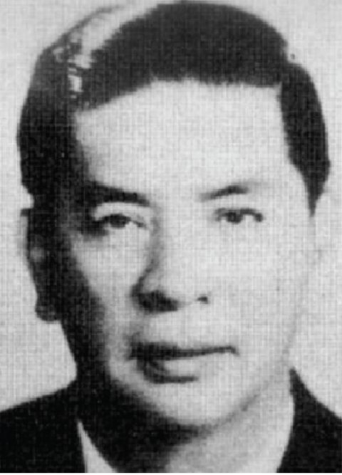
第十任 · 1958–1960
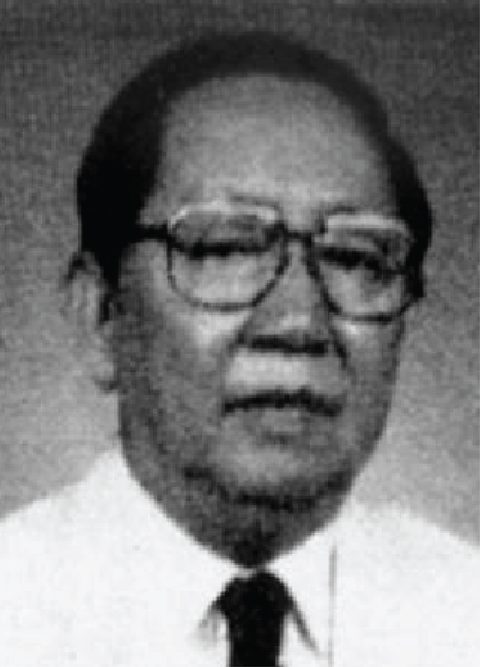
第十一任 · 1961–1970
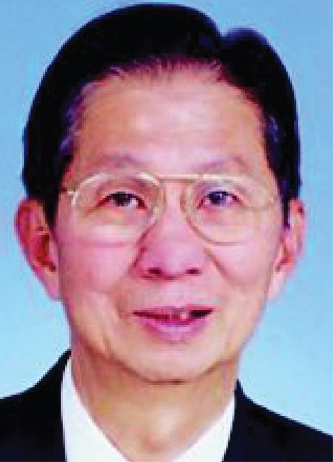
第十二任 · 1971–2010 年 4 月
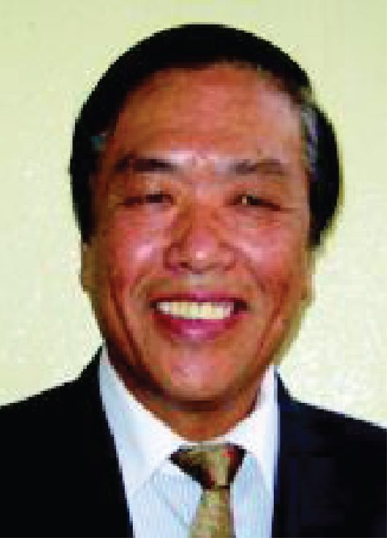
第十三任 · 2010 年 5 月–2016 年 4 月
第十四任 · 2016 年 5 月迄今
现任董事名录取自校方《2022 年董事部制作名片资料》（第四十一届，2022–2023），至本页建立时尚未取得更新版本，姓名与职称可能已有变动。历届董事长任期与肖像取自校长室提供之《南华历任董事长及任期》（2026 年）。
本页不刊载任何董事的私人电话与电邮。返回 学校组织。